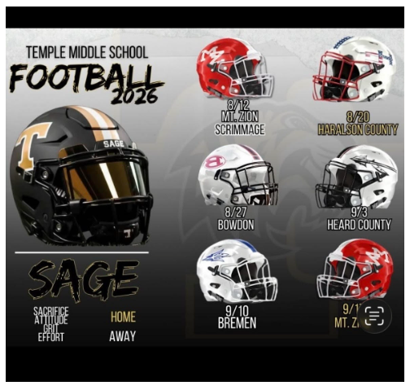

Temple Tigers
10U Football
- 10U TigersTeam photographs and game scheduleTemple
The 10U Tigers and Temple Middle School carry the same black, gold, white, and red identity—from youth football into the school program.

Shared Temple identity: the 10U and middle-school teams use nearly identical uniforms and styling, showing a clear pathway through one Tigers football program.